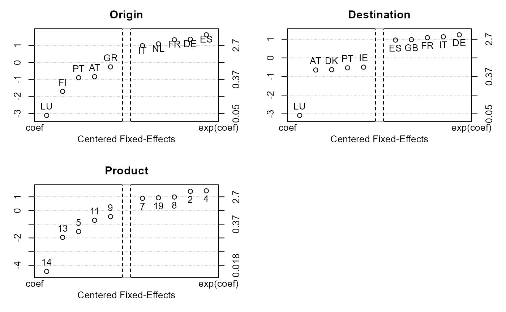

This function plots the 5 fixed-effects with the highest and lowest values, for each of the fixed-effect dimension. It takes as an argument the fixed-effects obtained from the function fixef.fixest after an estimation using femlm, feols or feglm.
# S3 method for fixest.fixef plot(x, n = 5, ...)
| x | An object obtained from the function |
|---|---|
| n | The number of fixed-effects to be drawn. Defaults to 5. |
| ... | Not currently used. Note that the fixed-effect coefficients might NOT be interpretable. This function is useful only for fully regular panels. If the data are not regular in the fixed-effect coefficients, this means that several ‘reference points’ are set to obtain the fixed-effects, thereby impeding their interpretation. In this case a warning is raised. |
fixef.fixest to extract clouster coefficients. See also the main estimation function femlm, feols or feglm. Use summary.fixest to see the results with the appropriate standard-errors, the function etable to visualize the results of multiple estimations.
Laurent Berge
data(trade) # We estimate the effect of distance on trade # => we account for 3 fixed-effects est_pois = femlm(Euros ~ log(dist_km)|Origin+Destination+Product, trade) # obtaining the fixed-effects coefficients fe_trade = fixef(est_pois) # plotting them plot(fe_trade)